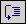
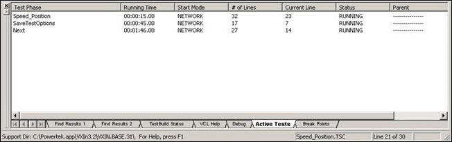

iTest User's Guide
Test Manager provides a debugging tool that allows you to step through a procedure and analyze the effect of each line, when the test is being executed in iTest. Debug mode is available in Test Manager, when the Console is active.
 |
NOTE: | The debugger is not automatically activated when Test Manager is in debug mode. You must click on the Toggle Debugger button on the Debugging toolbar to activate it. The debugger tool can not be activated if there have been any changes made to the procedure since iTest started or the last rebuild. |
The debugger uses breakpoints to walk through a procedure. A breakpoint is a marker on a line of code within a procedure. The Console stops a procedure prior to executing a line of code that contains an enabled breakpoint.
You can also disable breakpoints in a procedure. When the Console encounters disabled breakpoints in a procedure, it ignores them and continues to execute the code. This allows you to run a procedure without deleting the breakpoints in case you need to use them again.
You can clear breakpoints if you want to permanently remove them from a procedure. It is recommended that you remove breakpoints before running a procedure in a production environment. For more information, see the Removing Breakpoints section towards the end of this page.
You cannot apply breakpoints to the following lines in a procedure:
#endif, #endwhile, and #else statementsWhen active, the debugger displays a left margin in the active window and uses icons next to the lines of code to indicate its debug state. This involves adding or changing an icon in the left margin based on the current activity that is taking place.
Apply Breakpoints
The following table describes the icons applied to code when debugging a procedure:
Debugging Procedure Icons
| Color | Description |
| A breakpoint has been enabled for the line of code. | |
| A disabled breakpoint. | |
| Current line of execution that either does not contain a breakpoint or contains a disabled breakpoint. | |
| Current line of execution contains a breakpoint. |
Debugging Toolbar Buttons
| Button | Tooltip | Description |
| Build Tests | Issues a $REBUILD to rebuild VCL. Use this button to rebuild procedures after you make modifications. If you experience problems with stepping behavior when debugging, such as stepping onto comments or blank lines, rebuild the test to resolve the problems. | |
| Toggle Debugger | Deactivates the debugger if active; activates the debugger if inactive. This button is enabled only when Test Manager is in debug mode. | |
| Run Current Test | Executes the current test if it is not already running. If the current test is already running, it continues running until its completion or until the next breakpoint, if one is defined. This button is enabled when a procedure is open and the procedure is the active window. | |
| Stop Debugging | Terminates the running procedure in the active window and any child procedures launched from this procedure using the EXECUTE VCL Command. This button is enabled when a procedure is open and the procedure is the active window. | |
| Step Into | Steps into a called procedure. If the called procedure is already open in Test Manager, click the Step Into button to bring it to the top of all open documents. If the called procedure is not open, click the Step Into button to open the called procedure and bring it to the top of all open documents in Test Manager. This button is enabled when a procedure is open and being debugged, and the current line of code starts (calls) another VCL function or procedure using the EXECUTE VCL command (Note: This only occurs if a breakpoint has been toggled on this line or if using the Step Over button to step through the procedure from a previous breakpoint). | |
|  | Step Over | Advances to the next valid line of code. This button is enabled when a procedure is being debugged. |
| Step Out | Exits the current procedure and returns to the calling procedure. If there is no calling procedure, the current procedure executes until it is complete. iTest ignores any breakpoints that are past the current point of execution. When stepping out of a called procedure, the calling procedure is brought to the top of all open documents. This button is enabled when a procedure is being debugged (Note: This only occurs upon reaching a breakpoint). | |
| Toggle Breakpoint | Adds a breakpoint to the selected line of code if it doesn’t already contain one or removes a breakpoint if the selected line of code contains one. This button is enabled when a procedure is open and the procedure is the active window. | |
| Clear All Breakpoints | Removes all breakpoints. This button is enabled when at least one breakpoint is configured. | |
| Enable All Breakpoints | Enables all breakpoints if they were previously disabled. By default, all breakpoints are enabled. This button is enabled when at least one breakpoint is configured. | |
| Disable All Breakpoints | Disables all breakpoints defined in iTest, regardless of whether they are open for viewing in Test Manager. When iTest encounters disabled breakpoints in a procedure, it ignores them and continues to execute the code. This button is enabled when at least one breakpoint is configured. |
The Output Bar has three additional tabs when the debugger is active:
The Debug tab displays the current values of all local variables, global database channels, and internal variables contained within the active procedure.
Switching from one procedure to another updates the list on this tab. Selecting a Test Manager component other than a procedure clears this tab.
Database channels are continuously updated on the Debug tab. A channel value will also be updated when its value is modified by a procedure other than the procedure being debugged.
Internal variables are only updated by events. Typically, stepping through a procedure triggers an internal variable update. If an internal variable’s value is modified by a procedure other than the one being debugged, its value is not updated unless an event occurs during debugging.
Local variables are valid only within the scope of the procedure in which they are declared. When you open a procedure in Test Manager that contains local variables, the names of the local variables display on the Debug tab. Initially, these local variables have no value. As you step through a procedure, local variable values are initialized as the code that declares them is executed. VCLNUMs initialize to zero and VCLSTRs initialize to an empty string. After a line is executed that changes a local variable’s value, its value is updated on the Debug tab to reflect the expected value. Due to the way debugging information for local variables is obtained from iTest, there can be a slight "lag" where the values of the local variables don't sync up with the values of database channels.
The Active Tests tab contains a list of procedures currently running on the Console.
Active Tests

This tab also displays the following information about active tests:
Double-click a procedure in this list to open it in the Test Manager Display Area.
The Breakpoints tab displays a list of breakpoints defined in iTest procedures that are open.
Breakpoints Tab
The line number and the breakpoint’s current status display on the Breakpoints tab. A colored dot displays to the left of the breakpoint. The color of the dot indicates the state of the breakpoint, as described in the following table:
Breakpoint Status Color
| Color | Description |
| Green | Current line of execution is a breakpoint. |
| Red | Enabled breakpoint. |
| Unfilled | Disabled breakpoint. |
 |
CAUTION: | If a procedure was modified since its last build, you cannot toggle on the debugger without a re-build. If the debugger is on you cannot modify the procedure. |
To debug a procedure, perform the following:
|
NOTE: | You can select multiple lines of code at one time. However a breakpoint is only applied to the first line in the selection. |
Highlight a channel or internal variable in the Debug tab by left-clicking on it. Right-click on it and select Properties. A window opens that displays a list of properties associated with the selected channel or internal variable.
You can only view properties in this window; you cannot edit them.
|
NOTE: | A local variable’s value can be modified only if the procedure within which it is declared is running and the variable has already been declared. The Modify Value option is not available if these conditions have not been met. |
|
NOTE: | If you write a string to a numeric channel the value of the numeric channel changes to zero. If you write a numeric value to a string channel the value of the string channel will contain the string representation of the numeric value. |
There are two ways in which you can stop procedures that are currently being debugged:
There are two ways in which you can disable breakpoints that have been enabled:
There are two ways in which you can enable breakpoints that have been disabled:
If you do not remove breakpoints from a procedure after debugging, the breakpoints will still exist after you exit Test Manager. This may result in operators experiencing what they believe is a system failure during runtime because iTest Console will stop executing when it encounters code that has an enabled breakpoint.
To remove breakpoints, perform one of the following actions: